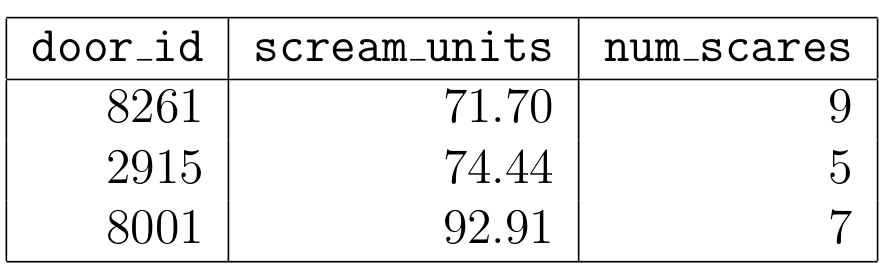

← return to practice.dsc10.com
Instructor(s): Peter Chi, Janine
Tiefenbruck
This quiz was administered in-person. Students were
allowed one page of double-sided handwritten notes; students
were not allowed to use the DSC 10 Reference Sheet.
Students had 20 minutes to work on the
quiz.
This quiz covered Lectures 13-16 of the Fall 2026 offering of DSC 10.
Monsters, Inc. powers its factory with the screams of DSC 10 students. Each night, monsters open closet doors into students’ rooms and scare them by whispering things like “the Midterm Project is due tomorrow,” “calculate the probability,” and “you have used 6 out of 6 slip days.”
The DataFrame doors has 500 rows, one
for each DSC 10 student. Its columns are:
"door_id" (int): an identifier for the door belonging
to this student’s room."scream_units" (float): the total amount of energy
collected from this student’s screams, across all scares."num_scares" (int): the number of times the student has
been scared.The first few rows of doors are shown below, though
doors has many more rows.

Assume we have already run import babypandas as bpd,
import numpy as np, and
from scipy import stats.
If your answer is a string, put it in quotes. If your answer is a float, include a decimal point. No calculators and no computers were allowed.
Sulley collects audit, a simple random sample of
200 rows from doors, and runs the code below to
estimate the mean "scream_units" of all DSC 10 students. He
wants [L80, R80] to be an 80% confidence interval and
[L90, R90] to be a 90% confidence interval for this
parameter.
boots = np.array([])
for i in np.arange(10000):
resample = audit.sample(200, replace=True)
boots = np.append(boots, resample.get("scream_units").mean())
L80 = np.percentile(boots, __(a)__)
R80 = np.percentile(boots, __(b)__)
L90 = np.percentile(boots, __(c)__)
R90 = np.percentile(boots, __(d)__)What goes in blanks (a), (b),
(c), and (d)?
Answer: (a): 10, (b): 90,
(c): 5, (d): 95
An 80% interval leaves out 20% of the bootstrap means, 10% on each side. So it goes from the 10th to the 90th percentile. A 90% interval leaves out 10%, 5% on each side, so it goes from the 5th to the 95th percentile.
The average score on this problem was 96%.
Write L80, R80, L90, or
R90 in each blank below so that the values stored in each
variable are ordered from smallest to largest (assuming no ties).
______ < ______ < ______
< ______
Answer: L90 < L80 <
R80 < R90
All four values are percentiles of the same array,
boots. A higher percentile is a bigger value, so we can
order them by their percentiles from part (a):
L90 is the 5th percentile.L80 is the 10th percentile.R80 is the 90th percentile.R90 is the 95th percentile.Since 5 < 10 < 90 < 95, the order is L90 <
L80 < R80 < R90. Another
way to see it: a 90% interval has to contain more values than an 80%
interval, so it reaches further out on both sides.
The average score on this problem was 86%.
Determine the approximate value of the expression below. Give your answer as an integer.
np.count_nonzero((boots < L80) | (boots > R90))Answer: 1500
L80 is the 10th percentile, so about 10% of the 10,000
values are below it: 1,000. R90 is the 95th percentile, so
about 5% are above it: 500. No value can be both below L80
and above R90, so we add them: 1,000 + 500 = 1,500.
The average score on this problem was 39%.
Suppose that 2,000 times, Randall draws a simple random sample of 25
rows from doors and computes the mean
"scream_units" of the sample. Which of the following
changes would make a histogram of the 2,000 means noticeably
narrower? Select all that apply.
Repeating the process 20,000 times instead of 2,000 times.
Using simple random samples of size 100, and recording each sample’s total instead of its mean.
Using random samples of size 100 drawn with replacement, instead of simple random samples of size 25.
None of the above.
Answer: Option 3
Option 1: No. More repetitions make the histogram smoother, but not narrower. How spread out the means are depends on the sample size, not on how many times we repeat.
Option 2: No. A total of 100 values is 100 times their mean, so the totals are far more spread out. The histogram gets wider.
Option 3: Yes. Means of larger samples vary less, so the histogram gets narrower. Samples of 100 are 4 times bigger than samples of 25. Drawing with replacement makes only a small difference.
Option 4: No, because Option 3 works.
The average score on this problem was 62%.
The "num_scares" column of doors is
strongly right-skewed, as a few unfortunate students
have been scared dozens of times. Suppose we run the following code:
num_scares = doors.get("num_scares")
su = (num_scares - num_scares.mean()) / np.std(num_scares)Which of the following statements must be true? Select all that apply.
At least 84% of the values in su are between -2.5 and
2.5.
The distribution of su is roughly normal.
The mean and median of su are both 0.
su has a mean of 0 and a standard deviation of 1.
None of the above.
Answer: Options 1 and 4
Option 1: True. Chebyshev’s inequality says that for
any distribution, at least 1 − 1/z² of the values are within z standard
deviations of the mean. su is in standard units, so being
between -2.5 and 2.5 means being within 2.5 standard deviations of the
mean. 1 − 1/2.5² = 1 − 0.16 = 0.84.
Option 2: False. Converting to standard units shifts
and rescales the data, but it doesn’t change the shape. su
is still right-skewed.
Option 3: False. The mean of su is 0.
But in right-skewed data, the median is below the mean, so the median of
su is below 0.
Option 4: True. Values in standard units always have a mean of 0 and a standard deviation of 1.
The average score on this problem was 65%.
Over six nights, Mike scared 2, 3, 5, 5, 6, and 9 students. This data has a mean of 5 students per night. On a seventh night, Mike scares 5 students. Compared to the standard deviation of the original six numbers, the standard deviation of all seven numbers is:
Larger
Smaller
The same
Impossible to tell
Answer: Smaller
The deviations from the mean of 5 are -3, -2, 0, 0, 1 and 4. Their squares add up to 9 + 4 + 0 + 0 + 1 + 16 = 30, so the variance is 30 / 6 = 5. The new value, 5, equals the mean, so the mean stays 5 and the new deviation is 0. The sum of squares stays 30, but now we divide by 7: 30 / 7 is less than 5. A smaller variance means a smaller standard deviation.
The average score on this problem was 72%.
Monsters also collect energy from students’ laughs. Laugh energy is roughly normally distributed, with a peak at 58 and inflection points at 46 and 70. Write one line of code that evaluates to the approximate proportion of laughs with energy greater than 85.
Answer: 1 - stats.norm.cdf(2.25) or
stats.norm.cdf(-2.25)
The peak of a normal curve is at its mean, 58. The inflection points
are one standard deviation from the mean, so the SD is 70 − 58 = 12. In
standard units, 85 is (85 − 58) / 12 = 27 / 12 = 2.25.
stats.norm.cdf(2.25) is the proportion below 2.25, so the
proportion above it is 1 minus that. By symmetry, this is the same as
the proportion below -2.25. It works out to about 0.012.
The average score on this problem was 61%.